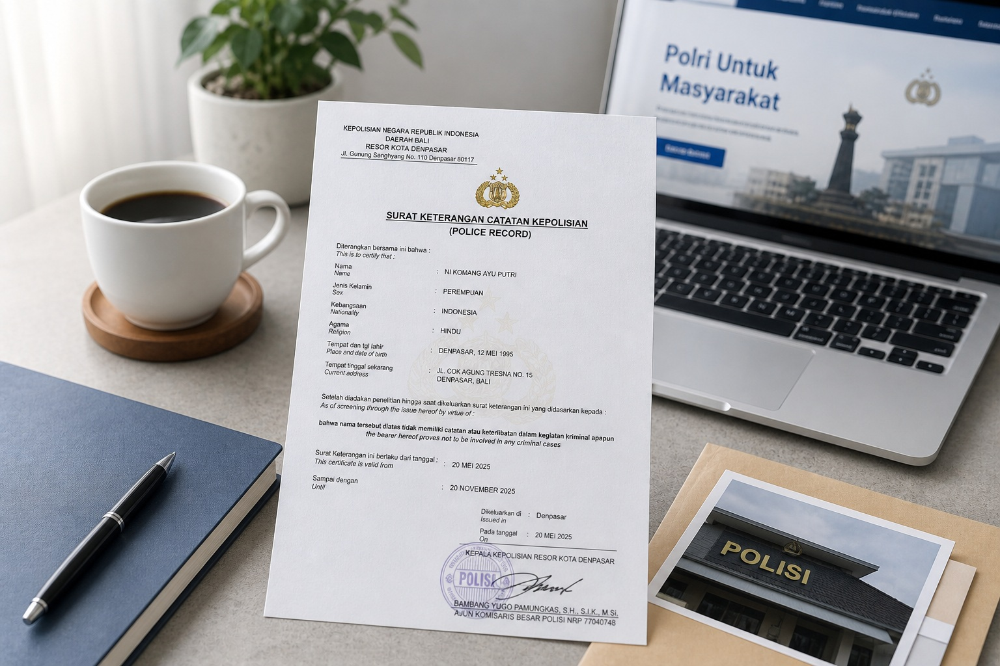

Ingin mengurus SKCK di Bali dengan proses yang lebih jelas, terarah, dan mudah dipahami?
SKCK merupakan salah satu dokumen penting yang sering dibutuhkan untuk berbagai keperluan seperti melamar pekerjaan, pengajuan visa, hingga administrasi lainnya. Dengan memahami syarat dan alur pengurusan sejak awal, proses pembuatan SKCK dapat berjalan lebih terarah dan sesuai prosedur yang berlaku.

SKCK (Surat Keterangan Catatan Kepolisian) adalah dokumen resmi yang diterbitkan oleh Polri yang berisi catatan tentang riwayat seseorang terkait data kepolisian.
Dokumen ini sering digunakan untuk berbagai kebutuhan administratif baik di dalam negeri maupun luar negeri.
SKCK memiliki masa berlaku tertentu dan dapat diperpanjang sesuai kebutuhan.
| Wilayah | Keyword SEO |
|---|---|
| Denpasar Selatan | Pembuatan SKCK Denpasar Selatan |
| Denpasar Barat | Pembuatan SKCK Denpasar Barat |
| Kuta | Pembuatan SKCK Kuta |
| Canggu | Pembuatan SKCK Canggu |
| Ubud | Pembuatan SKCK Ubud |
| Sanur | Pembuatan SKCK Sanur |
Untuk proses yang lebih mudah dipahami, Anda dapat menggunakan layanan dari Rizch Service yang membantu pengurusan dokumen secara profesional.
Pendampingan yang tepat membantu proses berjalan lebih terarah dan sesuai prosedur.
Tergantung kebutuhan administrasi.
Tergantung kondisi dan kelengkapan dokumen.
Tergantung kebijakan masing-masing kantor.
Ya, selama masih memenuhi syarat.
← Lihat Artikel Lainnya 💬 Chat WhatsApp